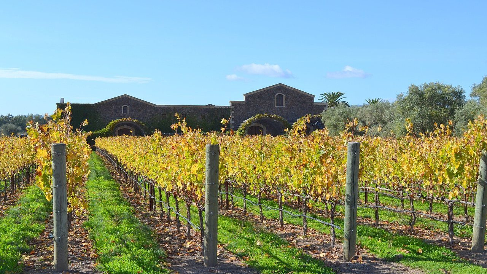

Race, Napa Vineyards

Behind
Best +0:01
371W
Target 418 W-47 W
- Cadence
- 87rpm
- Heart
- 140bpm
- Speed
- 26.5km/h
Work9 of 19
0:22
Next: · 1:00 at level 10
+1.4%
16 m climbed
3.12 km
13
Resistance / 32
Solo races your best-time ghost: position reads Ahead or Behind, and solo alone gets a Pause button. Frozen at 7:38.